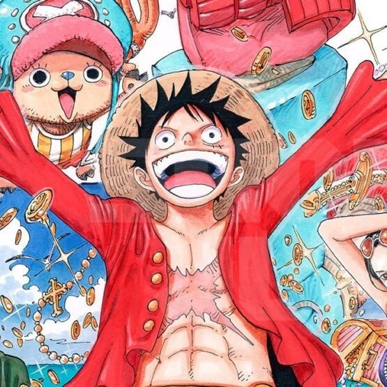

One Piece
Sinopse:One Piece começa quando Gol D. Roger, o Rei Dos Piratas que possuiu tudo nesse mundo, antes de ser utado, diz que escondeu o seu tesouro em algum lugar da Grand Line, um oceano extremamente perigoso. Desde então muitos piratas se aventuram pela Grand Line para tentar encontrar o tesouro chamado One Piece. Um deles é Monkey D. Luffy, o garoto que, acidentalmente, comeu uma das Akuma No Mi, a Gomu Gomu No Mi (Fruta da Borracha), e agora ele pode esticar seu corpo como se fosse uma borracha. A jornada dele começa atrás de companheiros e um barco, que ele vai conseguindo pouco a pouco, pois tem um objetivo: Se tornar o Rei Dos Piratas.
